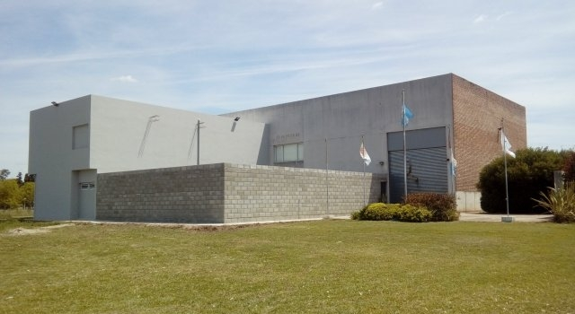
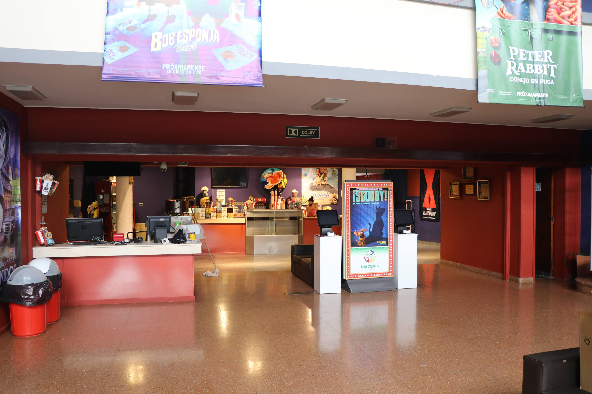

Zona urbana
Fundación Archivo Histórico y Museo Gráfico de la ciudad.
Ubicación: Avenida de la Universidad 271.
Cine Las Tipas.
Ubicación: Iturraspe 1448.
Centro Cultural San Francisco.
Ubicación: J.J.Paso y Mitre.

